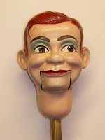
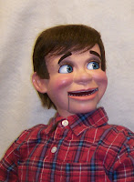
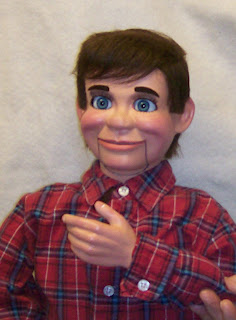

New life for Jerry
1/28/2009
{kind=link}

Question: My Jerry Mahoney dummy that was once repaired by you, now needs the same string replaced again. (A 7 year old little girl took the scissors to poor Jerry and cut the string off short). Can you repair Jerry again so Jerry can again perform? Since Jerry was put out of commission almost 15 years ago, Jerry has just sat and been sad all these years. Jerry, also known as Granny and Sherry Ann, has played many parts in our shows. We need Jerry back in our lives. Jerry only has the turning head and the mouth movement.
Before Jerry's horrible accident, I was going to send him off to you and have you update him with moving eyes, eyebrows etc. I don't know if this is still possi
{kind=link}

ble or not, or even cost worthy. The hands appear a bit smaller than I think they should be for this 32" size figure. Have you upgraded these hands to a slightly larger size?Would it be more practical for me to update Jerry, or to purchase another one of your figures in the deluxe or super deluxe series? With Jerry being so old (but well kept) most of his life, I struggle with the decision of retirement for Jerry to keep
{kind=link}

what is left of him intact, and to move on and purchase another figure. However I do need another character for backup in case the (string breaks). Now that I am retired I would love to be able to give a few more Gospel shows before I completely retire. Thanks again for listening and for your wonderful products. Ventriloquially Yours, Shirley Dale* * * * * *
Answer: After reading and considering your letter, my first choice for you would be a repair and upgrade of your Jerry Mahoney. He still is one of the better characters ever created of his size. If you would like to send him to me, I can then look him over and email you with possible upgrades and options. Even if you would spend as much as $200 to upgrade him (including more deluxe hands), you would have a superior figure to anything you could purchase for $200 today - of that I'm quite certain. (Note to readers: subsequent the above correspondence, Jerry did indeed make the trip to my shop and has been upgraded incluing a totally new body. You see the completed figure here and can read the owner's response below.)
From Shirley: "I received Jerry safe and sound. He looks wonderful. I am so proud. The blue eyes with the brown hair is a great look. I am so pleased with his hands, and the body is also great. Everything is just perfect. Thank you so much for your wonderful workmanship on my Jerry.
"He has been 15 years without any voice because the string was cut ... so he gets home and finds me with a sore throat and no voice. We all have laughed at that one.
"I am so proud of this little guy, and can tell everyone that he is a custom made vent figure by Mr D for sure. And I want to add, his eyes are balanced to perfection. I could go on and on, but I will stop. I am so happy with my Jerry. Thank you Mr. D. You have made me a very very happy person. "
* * * * *
"You are quite welcome, Shirley. Thank you for your very kind words. I am both humbled and encouraged!" Clinton